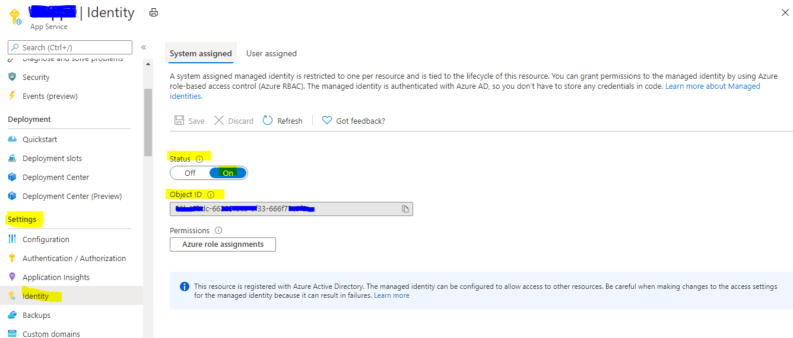
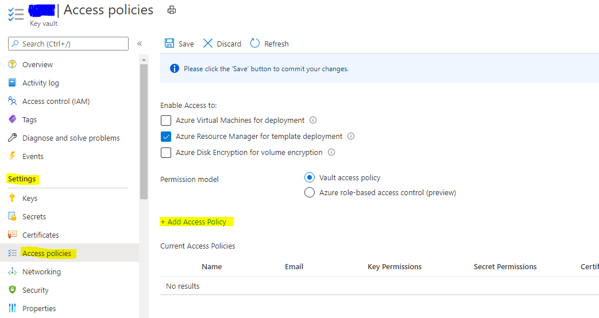
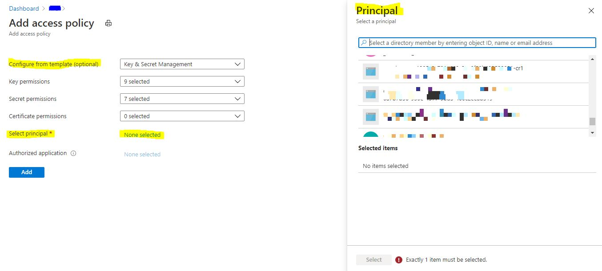

Managed Identity Implementation of Azure Key Vault
With any key/password store I always thought that the weak link was the credentials used to access it. If that single point of failure was compromised then all your secrets would be vulnerable. Microsoft have overcome this by creating the Managed Identity. A Managed Identity is generated by a resource within Azure and can be configured to access resources that use Azure AD for authentication.
Managed Identity 🔗︎
Managed identities for Azure resources is a feature of the Azure Active Directory.
A common challenge when building cloud applications is how to manage the credentials in your code for authenticating to cloud services. Keeping the credentials secure is an important task. Ideally, the credentials never appear on developer workstations and aren’t checked into source control. Azure Key Vault provides a way to securely store credentials, secrets, and other keys, but your code has to authenticate to Key Vault to retrieve them.
The managed identities for Azure resources feature in Azure Active Directory (Azure AD) solves this problem. The feature provides Azure services with an automatically managed identity in Azure AD. You can use the identity to authenticate to any service that supports Azure AD authentication, including Key Vault, without any credentials in your code.
Implementation of Managed Identity 🔗︎
-
How to use managed identities for App Service and Azure Functions
Step 1: Add a system-assigned/User-assigned identity- GO to https://portal.azure.com/
- Search for App Services and Select your App Service.
- Navigate to Setting => Identity
- Set status to “On” it will generate object ID this id is unique id of resource which we will use to provide access of different resources for app service/azure function.
- 
Step 2: Add Service Identity/Principal in Key vault access policy
- GO to https://portal.azure.com/
- Search for Key vault and Select your Key vault instance.
- Add Access Policy.
- Navigate to Setting => Access policies => + Add Access Policy.
- 
- Add access policy from template or provide access level by manual.
- Select principal => search App service by object Id (managed Identity) => Add
- 
Step 3: Code Level Implementation
- Add NuGet packages to your project.
Microsoft.Azure.KeyVaultMicrosoft.Azure.Services.AppAuthentication
- Code
/// <summary> /// Get Secret from key vault. /// </summary> /// <param name="kvName">Key Vault Name</param> /// <param name="secretName">Secret Name</param> /// <returns> Secret value</returns> static string GetSecretFromKeyVault(string kvName, string secretName) { string result = string.Empty; string keyVaultBaseUrl = "https://{0}.vault.azure.net/"; var azureServiceTokenProvider = new AzureServiceTokenProvider(); var kvClient = new KeyVaultClient(new KeyVaultClient.AuthenticationCallback(azureServiceTokenProvider.KeyVaultTokenCallback)); result = kvClient.GetSecretAsync(string.Format(keyVaultBaseUrl, kvName), secretName).Result.Value; return result; }
-
Local development
Local machines don’t support managed identities for Azure resources. As a result, theMicrosoft.Azure.Services.AppAuthenticationlibrary uses your developer credentials to run in your local development environment. When the solution is deployed to Azure, the library uses a managed identity to switch to an OAuth 2.0 client credential grant flow. This approach means you can test the same code locally and remotely without worry. For local development,AzureServiceTokenProviderfetches tokens using Visual Studio, Azure command-line interface (CLI), or Azure AD Integrated Authentication. Each option is tried sequentially and the library uses the first option that succeeds. If no option works, anAzureServiceTokenProviderExceptionexception is thrown with detailed information.Authenticating with Visual Studio
To authenticate by using Visual Studio:- Sign in to Visual Studio and use Tools > Options to open Options.
- Select Azure Service Authentication, choose an account for local development, and select OK.
- IMAGE
- IMAGE
{kind=link}
{kind=link}
{kind=link}
If you run into problems using Visual Studio, such as errors that involve the token provider file, carefully review the preceding steps. You may need to reauthenticate your developer token. To do so, select Tools > Options, and then select Azure Service Authentication. Look for a Re-authenticate link under the selected account. Select it to authenticate.
References:
https://docs.microsoft.com/en-us/azure/active-directory/managed-identities-azure-resources/overview
https://docs.microsoft.com/en-us/azure/key-vault/general/service-to-service-authentication
https://docs.microsoft.com/en-us/azure/app-service/overview-managed-identity?tabs=dotnet